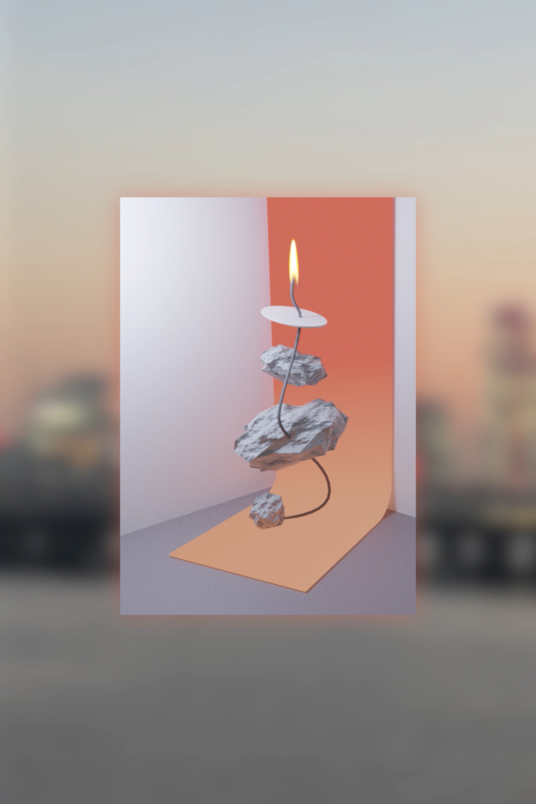

돌잡이, 2023,
컬러, 무성, 10초

돌의 n번째 돌(생일)을 축하하며… n을 궁금해하다.
올해로 n번재 생일을 맞은 돌은 자신의 친구들을 ‘돌잔치’에 초대했다.
한 줄로 선 돌과 친구들은 촛불이 타고있는 심지로 서로를 연결시켰다.
그것이 ‘자신들을 연결해주는 끈’이라고 믿으면서. 시간이 지남에 따라 촛불은 심지를 타고 내려왔다.
어느 순간 그들을 붙잡고 있던 심지는 불에 타서 다 사라지고 그들에게 남은 건 아무것도 없다.
돌로서 그들의 존재도, 그들의 연결고리도, n번째 돌도.
현재 심지는 돌잡이의 역할을 톡톡히하고 있다.
언제 사라질지 모르는 돌들의 존재를 붙잡으면서.
Celebrating the 'N'th stone (in Korean: birthday) of the stone... wonder about n
Dol, who celebrated his nth birthday this year, invited his friends to a "first birthday party."
A row of stones and friends connected each other with a wick on which candles were burning.
Believing it was 'the string that connects them'. As time went on, candles came down the wick.
At some point, the wick that was holding them was burned down and all disappeared, and there was nothing left for them.
Neither their existence as stones, nor their connections, nor the nth stone.
Currently, the wick is playing the role of a stone catcher.
Holding onto the existence of stones that may disappear at any time.